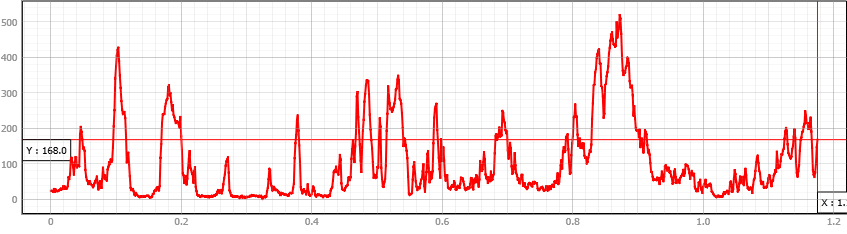
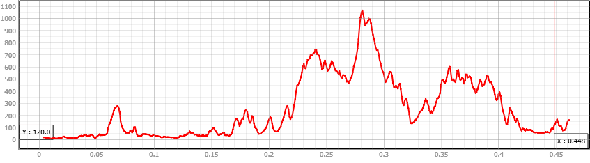

1. ข้อมูลภาพรวมโครงการ (Overview)
การศึกษานี้จัดทำขึ้นเพื่อวิเคราะห์ลักษณะภูมิประเทศ ความสูงต่ำ และโครงสร้างเส้นชั้นความสูงของจังหวัดพังงา โดยใช้เครื่องมือระบบสารสนเทศภูมิศาสตร์ (QGIS) ในการประมวลผลชั้นข้อมูลเชิงพื้นที่ต่างๆ

รูปที่ 1: หน้าจอแสดงผลโปรเจกต์ QGIS ภาพรวมพื้นที่จังหวัดพังงา
2. การวิเคราะห์เส้นชั้นความสูง (Contour Analysis)
การแสดงผลลัพธ์ของเส้นชั้นความสูง (Contour Lines) ช่วยให้เห็นความหนาแน่นและความชันของพื้นที่ภูเขาในจังหวัดพังงา ซึ่งมีการไล่ระดับความสูงอย่างชัดเจนตามลักษณะภูมิประเทศจริง

รูปที่ 2: รายละเอียดเส้นชั้นความสูง (Contour) และระดับความสูงของพื้นที่
3. การวิเคราะห์หน้าตัดความสูงภูมิประเทศ (Elevation Profile)
การใช้เครื่องมือ Profile Tool ช่วยจำลองความสูงต่ำในแนวตัดขวาง ทำให้เห็นภาพความชันและยอดเขาในรูปแบบกราฟ 2 มิติ ดังนี้ครับ:

รูปที่ 3: กราฟแสดงระดับความสูงภูมิประเทศในแนวจากทิศเหนือไปยังทิศใต้

รูปที่ 4: กราฟแสดงระดับความสูงภูมิประเทศในแนวจากทิศตะวันตกไปยังทิศตะวันออก